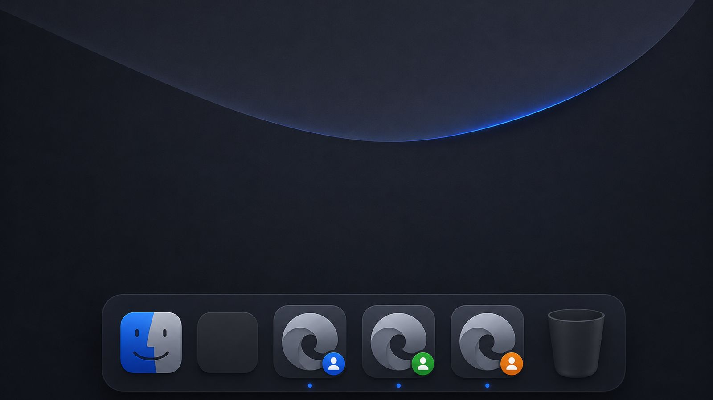

Superdock
SuperdockHow to get a separate Dock icon for each Chrome profile on Mac

Short answer: macOS gives one Dock icon per running app, and every Chrome profile runs inside the same Chrome app, so the Dock merges them. To get one icon per profile you either run a separate copy of Chrome for each profile, or use a dock that can tell the profiles apart. Superdock does the second: one icon per profile, each with its avatar, without a second Chrome.
Why does macOS show only one Chrome icon?
The Dock tracks processes, not identities. Chrome opens every profile, work, client, personal, inside one process, and the Dock has no idea a window belongs to a particular profile. Clicking the icon brings the most recent window forward, which is often the wrong profile. Right-click lists every window from every profile in one long menu. Apple's Dock has no setting to change this.
What are the options?
Option 1: a separate Chrome instance per profile
Chrome can be launched with its own data folder (--user-data-dir), which makes macOS treat it as a separate app with its own Dock icon. Shell scripts and a few utilities automate this. The cost is real: each copy is a full Chrome process with its own memory, and every account has to sign in again inside each copy. In our measurement, three instances used about 2.8 times the memory of one Chrome with three profiles.
Option 2: a dock that separates profiles
Superdock replaces the Dock with one that draws its own tiles. It reads Chrome's profile list and attributes each window to its profile from the window title, so it can show one tile per profile with that profile's avatar, and only that profile's windows behind it. Chrome stays exactly as it is: one process, shared memory, logins intact.
How do I set it up with Superdock?
- Download and open Superdock. Drag it to Applications and launch. It is notarized by Apple, so it opens with a double-click.
- Grant Accessibility once. The welcome screen asks for it; it is how Superdock sees other apps' windows. Nothing else is required.
- Open Chrome as usual. Each profile with a window gets its own tile as soon as its first window opens; the pinned Chrome slot becomes the first profile you use, like the Windows taskbar.
- Pin the ones you want. Right-click a profile tile and choose Options, Keep in Dock, or drag it into the pinned row. Pinned profiles open a new window in that profile when clicked.
What does a profile tile do?
Click: brings that profile's most recent window forward, or opens one. Hover: previews only that profile's windows. Right-click: New Window in This Profile, that profile's windows, Options, and Hide or Quit for Chrome. The tile shows the account photo Chrome stores for the profile; Google monogram avatars appear as the coloured initial you see in Chrome itself.
Frequently asked questions
Does this work with other Chromium browsers?
Superdock reads Google Chrome's profile list and window titles. Brave, Edge and Arc keep profiles in the same way but are not attributed today; they appear as ordinary app icons.
Does it need Full Disk Access?
No. Accessibility is the only required permission. Screen Recording is optional and only adds live thumbnails to previews.
What happens after the 14-day trial?
The dock keeps working for free. The per-profile icons need a licence, $7.99 once for up to five Macs.
Download Superdock for Mac Free for 14 days, no account. $7.99 once after that.